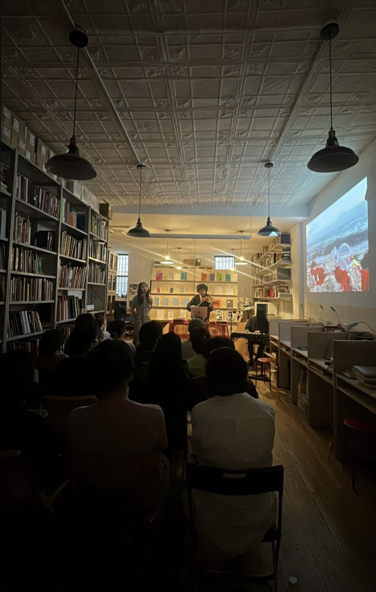
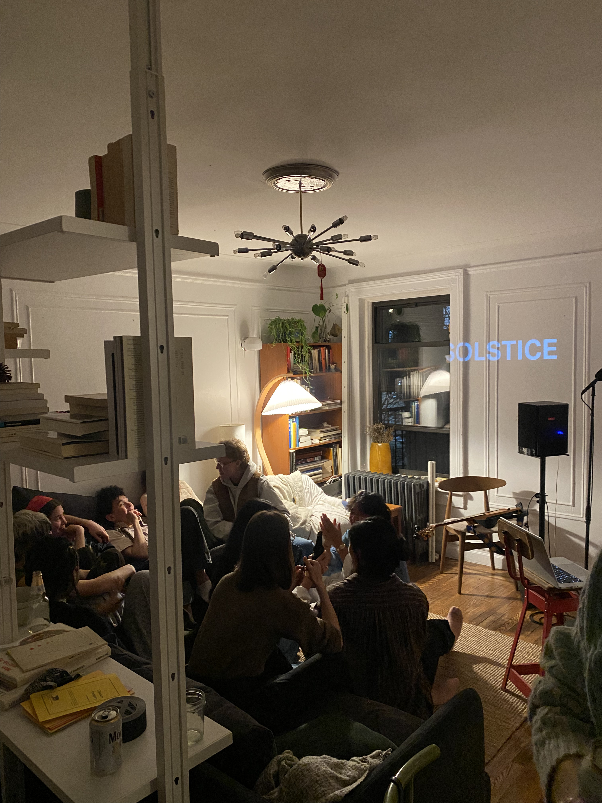
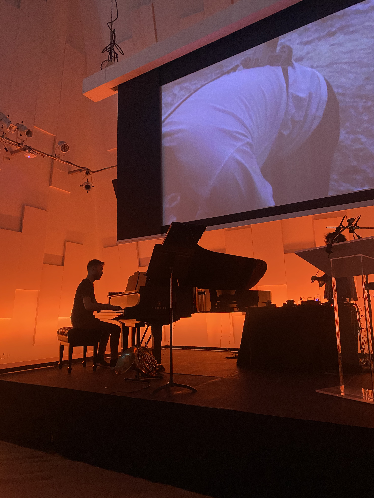

SOLSTICE HIGHLIGHTS
Selected excerpts from the first (May 2022, New World Symphony, Miami, FL) and most recent (July 2025, Wendy's Subway, Brooklyn, NY) performances of SOLSTICE. This video also contains sections of the video pieces for movements IV and VI. Footage of the May 2022 performance by New World Symphony. Footage of the July 2025 performance by Jun!yi Min.
Selected excerpts from the first (May 2022, New World Symphony, Miami, FL) and most recent (July 2025, Wendy's Subway, Brooklyn, NY) performances of SOLSTICE. This video also contains sections of the video pieces for movements IV and VI. Footage of the May 2022 performance by New World Symphony. Footage of the July 2025 performance by Jun!yi Min.

SOLSTICE (2022), New World Symphony, Miami, FL. Photo by Claire Beini Zhang with assistance
from Eli Pandolfi.

SOLSTICE (2024), Land to Sea, Brooklyn, NY. Photo by Alex Zhang.

SOLSTICE (2022), Wendy's Subway, Brooklyn, NY. Photo by Sunny Iyer.
SOLSTICE (2023), House Show, Brooklyn, NY. Video by Caleb Stone.
SOLSTICE (2025), in preparation for Wendy's Subway, Brooklyn, NY. Video by Claire Beini Zhang.

SOLSTICE (2023), House Show, Brooklyn, NY. Photo by Claire Beini Zhang.

SOLSTICE (2022), New World Symphony, Miami, FL. Photo by Claire Beini Zhang.

SOLSTICE (2024), Land to Sea, Brooklyn, NY. Photo by Alex Zhang.